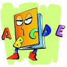

|
 |
The purpose of this page is to investigate what happens when the input words are the word names of numbers. For example, what is the numerical value for zero, when the letters are replaced with their alphabetical position value (A = 1, B = 2, �, Z = 26), and then added?
26 + 5 + 18 + 15 = 64
Got it now? It's easy. Okay. Before we start with the big stuff, here are a couple of tasks to serve as warm-up.
Task #1: Find the numerical values for all the numbers from 1 to 10, or more specifically, from one to ten. Then list the numbers from small to large according to the numerical values of their word names.
Task #2: Find the number or numbers n, such that 10 < n < 100, whose number value(s) is/are exactly 100.
Now we will present a most interesting idea, the one that prompted us to prepare this page in the first place. It's clear by now that every number is associated with another, newer number, the sum of the letter values of its word name. So what would happen if you took that sum's word name and found its numerical value? And then continued with the result as often as necessary for something to happen?
Such a procedure has a name: recurrent operations. There are several pages in WTM that have activities along this line, including KAPREKAR, ULAM and
Happy & Dizzy Numbers.
"Where do I begin?" do I hear you ask? That's the beauty of this activity - anywhere you wish! Maybe start with your age, your house's address, the last four digits of your phone number, whatever. You can even start at the beginning: 1, one. And go from there.
The next question you're likely to ask is, "when do I stop?" Ah, that one is harder to answer. The best WTM answer we can offer is "until you see something strange". We recommend that you briefly examine those three webpages just mentioned to get some clues.
The major algebraic objectives that can be taught or reviewed with this alpha-math topic are (1) writing multi-term expressions, involving numerical coefficients, and (2) evaluating these expressions by substituting appropriate number values for the variables. Here's how WTM recommends that this be done.
[By the way, in presenting the procedure given above, the reader should not come away with the idea that it was necessarily the best way to find the number values. Its purpose is to bring together standard algebra techniques and this concept of number words. A more efficient way to research this topic in depth would be to make a list of all the necessary words and find their values in advance. There are not so many words. Thirty-two, in fact, will serve you nicely up to numbers with 15 digits.]
Of a lesser nature, we can make the following observations:
Palindromic sums occur for the following numbers: 13, 50, 21, 61, 91, and 57. In fact, one of those "alpha-sums" is another palprime. Which one is it?
If we take groups of numbers and find the sums of their alpha-sums, we can see other interesting results. For example, the sum of all the alpha-sums for the nine numbers from 61 to 69 is likewise a palindrome, a rather special one as well. Nice, huh?
(more coming later.)
The concept of connecting the letters of the alphabet with mathematical activities has a long and interesting history. One of the most popular and easy to understand is that of finding the numerical value of a word by assigning a number to each letter in that word (according to its position in the alphabet), then finding the sum of those values. For an elementary treatment of this idea, read the page Wordsworth in this very website.
In the math class...
This next section is really aimed at school teachers of math who would like to involve the concept discussed above while at the same time still teach a few of their standard objectives. So if you don't care about this, you can skip it and go do other things, ok?
And there you have it. Algebra meets Alpha-Math !
Some interesting trivia �
Take the number 15551. The first thing obvious about it is that it's a palindrome. What is not so obvious is that it is also a prime number. Hence, it is called a palindromic prime, or palprime, for short. Now find its number word value. It is likewise another palprime. Can you find it?
| Comments? Send e-mail. | Back to top | Go back to Home Page | Go back to Contents |